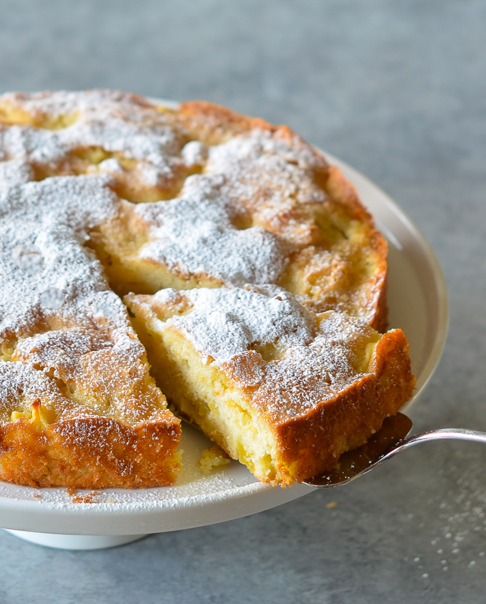

Apple Cake

Dessert in 30 minutes
This is a delightfully easy recipe for a quick dessert. The cake is always moist and light and is beautifully balanced between tart and sweet. Perhaps technically classified as a coffee cake, this apple cake is so simple- you don't even have to peel the apples if you don't want to.
- 1 1/2 cup flour
- 2 tsp baking powder
- 1/2 tsp baking soda
- 3/4 cup sugar
- 1 1/2 cup apples, chopped in small pieces
- 2 eggs
- 1 tsp vanilla
- 1/2 cup vegetable oil
- 1/2 cup plain yogurt
- Preheat the oven to 350 degrees.Grease a 8" or 9" round baking pan.
- Mix flour, baking poweder, baking soda, and sugar. Add apples.
- In a separate bowl, mix eggs, vanilla, oil, and yogurt.
- Combine wet to dry ingredients. Don't over smix.
- Pour batter into pan. Add a cinnamon topping (1/4 cup sugar, 1 tsp cinnamon, 1 Tbsp melted butter).
- Bake for 30 to 35 minutes. Serve with powdered sugar sprinkled on top.